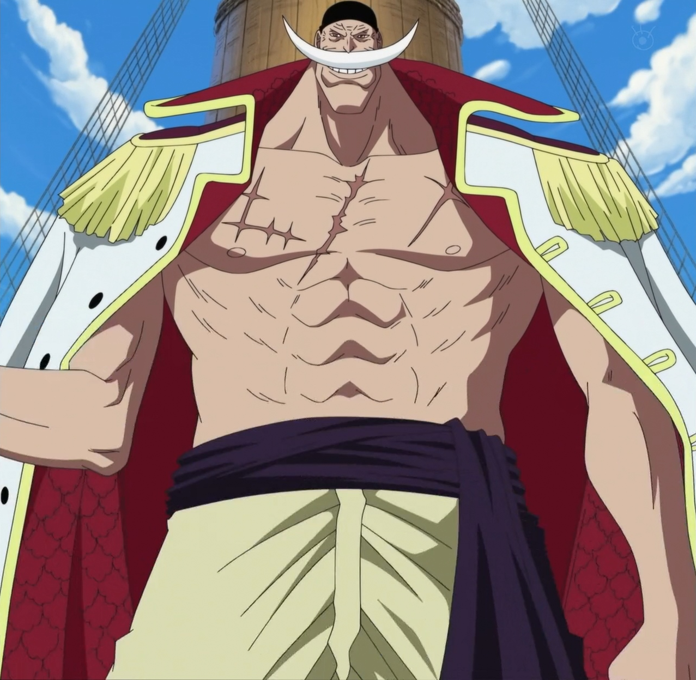

Edward Newgate, mais conhecido como "Barba Branca", era o capitão dos Piratas do Barba Branca e aquele que ficou conhecido como "O Homem Mais Forte do Mundo" e "O Homem Mais Próximo do One Piece" após a morte de Gol D. Roger. Antes de formar sua própria tripulação, ele era um membro dos lendários Piratas Rocks e mais tarde na vida ele se tornou um membro dos Yonkou que governam o Novo Mundo, antes de sua morte na Batalha de Marineford. Em seu auge, Barba Branca alcançou o título de "Homem Mais Forte do Mundo" muito antes da Grande Era dos Piratas e da morte de Roger que era seu rival, pois tinha um poder imenso e habilidade para destruir o mundo.
